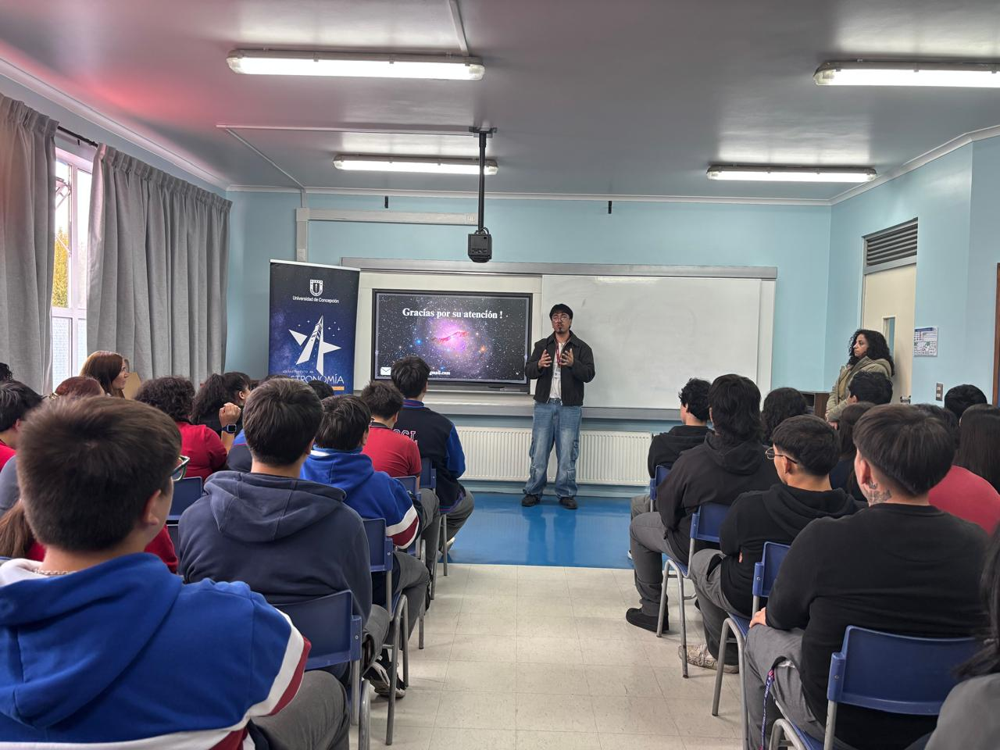
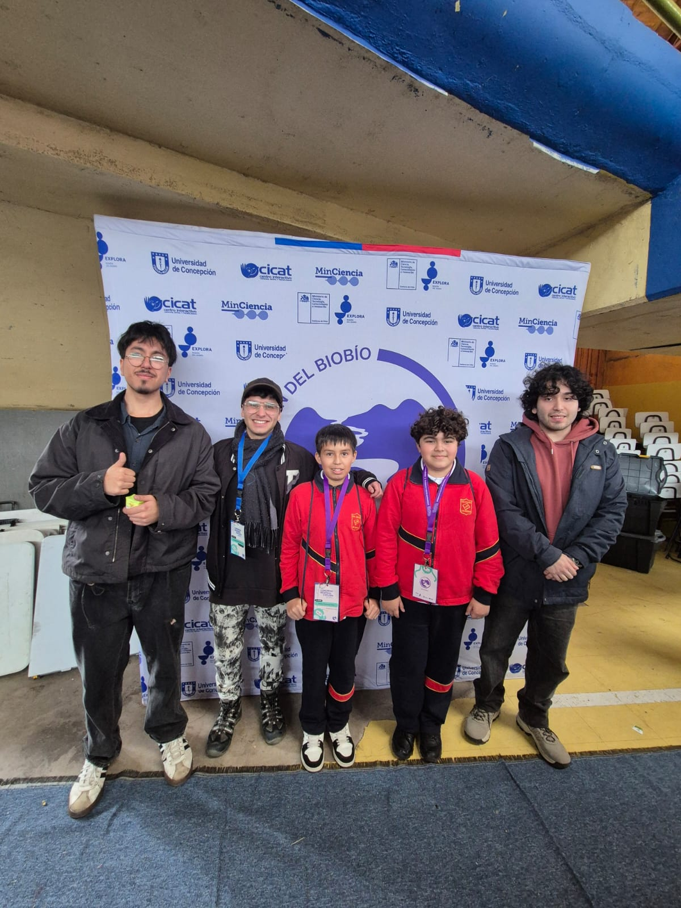
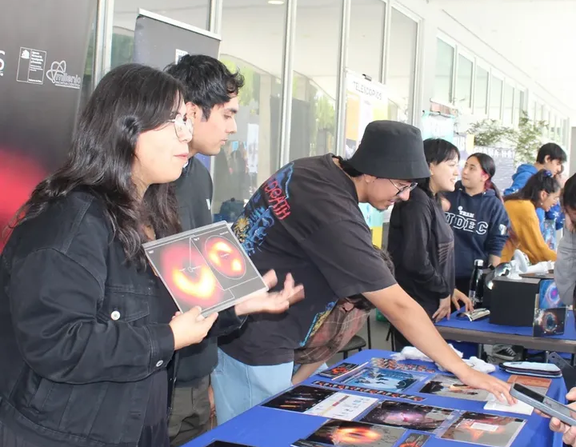

About Me
MSc Student in Astronomy • Universidad de Concepción
Hola!
I am a Master's student in Astronomy at Universidad de Concepción (Chile), currently working on Supermassive black holes (SMBH) and Active Galactic Nuclei (AGN).
I develop multiple projects studying these objects from the perspectives of spectroscopic analysis, photometric variability, and cosmology. I want to understand how supermassive black holes formed and evolved, the roles of binary interactions and super-Eddington accretion in their fast assembly, and the physics behind unusual variability events.
Besides Astronomy, I enjoy to train calisthenics, read books, and play football (although I'm currently injured).
I am proud of my Mapuche heritage. Interestingly, my maternal surname, Collipal, is the name that Mapuche gave to the star Antares (α Scorpii).
Some technical skills and softwares I have experience with
Programming & Computational Tools
- Languages: Python, Fortran, Bash/Shell, HTML
- Core libraries: NumPy, SciPy, Astropy, Pandas, TensorFlow, JAX, Matplotlib, Seaborn
- Specialized Software: PyQSOFit, PypeIT, DRAGONS, PyCCF, EzTaoX, Cobaya, GetDist, DS9, TOPCAT, CASA
Methods & Techniques
- Statistical Inference & Optimization: Bayesian inference, MCMC, Maximum Likelihood Estimation (MLE), Gradient descent
- Dimensionality Reduction: UMAP, PCA
- Machine Learning: Random Forest, k-Nearest Neighbors, Convolutional Neural Networks
- Time Series Analysis: Light curve Metrics, GLS Periodogram, Gaussian Processes
Outreach & Community Engagement
I was inspired to get into this field by science communicators. Whenever I find the time, I volunteer for public fairs, talks, and educational initiatives. I advise a team of curious elementary school students on their project developing a guide to observe constellations in their hometown.


